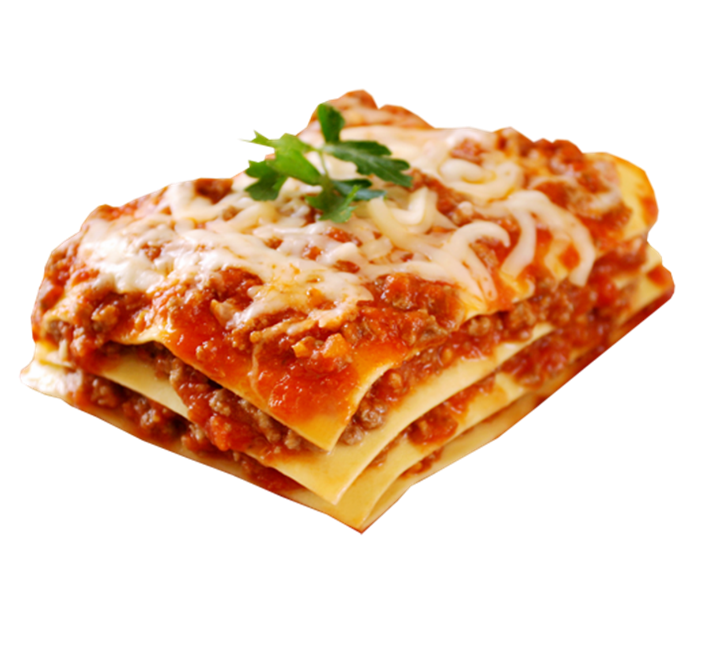

Lasagna

This lasagna recipe takes a little work, but it is so satisfying and filling that it's worth it!
Ingredients:
- 1 can crushed tomatoes
- 1/2 cup water
- 2 teaspoons oregano
- 3/4 pound lean ground beef
- 4 cloves garlic, crushed
- 1/2 cup ricotta cheese
- 1 egg
- 1 brick mozzarella
- 12 lasagna noodles
Instructions:
- Cook ground beef in a saucepan until browned. Season to taste
- Saute crushed garlic cloves and oregano with ground beef until lightly browned
- Mix in tomato sauce with ground beef and let simmer for 30 minutes
- Meanwhile, boil lasagna noodles and drain once cooked
- Beat together egg and ricotta cheese. In a separate bowl, shred/grate mozzarella
- To assemble, place two strips of lasagna noodles in a baking pan.
Spread a layer of ricotta cheese ontop of the noodles, followed by a layer of pasta sauce.
Place some shredded mozzarella followed by two strips of noodles. Repeat this procedure 3-4 times depending on the height of the pan.
When completed, top with a thick layer of mozzarella cheese and some grated parmesan and herbs (optional)
- Cover the lasagana with foil and bake at 375 for 40 minutes. Then, remove the foil and bake for an additional 20 minutes uncovered
- Remove from oven, rest for 5-10 minutes, and serve!